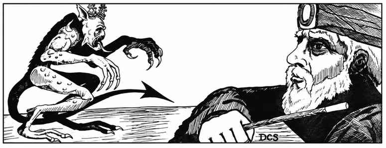
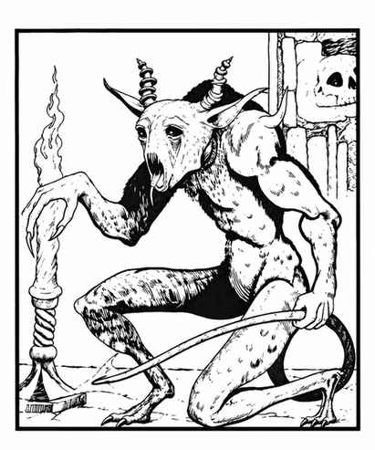

夸赛魔 · Quasit

 |
|
夸赛魔在物质位面稀有，在潘德摩尼乌姆与深渊位面却并不罕见。它是由幼虫变化而成的次级恶魔，作为混乱邪恶魔法师或牧师的使魔。恶魔领主赋予它在巨型蜈蚣、蝙蝠、青蛙或狼中任选两种进行变形的能力。
未变形时，夸赛魔以爪和獠牙攻击；爪伤会引起灼热瘙痒，每次受伤若未通过毒素豁免，敏捷永久暂时降低 1 点，持续 2–12 轮。所有夸赛魔都能侦测善良与魔法，每轮再生 1 点生命值，随意隐形，每天一次在半径 3 寸内制造恐惧爆发。只有魔法武器或冷铁武器能伤害它们；寒冷、火焰和闪电对其无效；针对法术时视为 7 骰生物。
夸赛魔低智却狡猾，在特定情况下还能借用恶魔领主的思维能力。成为使魔后，它通过心灵感应让主人在最多 1 英里外使用使魔全部感官（包括红外视觉）。距离主人 1 寸内时，主人获得夸赛魔的 25% 魔法抗性并每轮再生 1 点生命值；在 1 英里内，主人能力等级 +1；超出距离则等级 −1；夸赛魔死亡会使主人损失 4 个等级。它每周可接触下层位面一次，像沟通术一样帮助主人作决定，但只能提问 6 个问题。夸赛魔企图让主人制造更多混乱邪恶，也会杀死守序邪恶的人类以窃取灵魂；主人死亡时，它必须抢走灵魂返回深渊。